Hay varias formas de preparar una tabla de frecuencia en Excel. Aquí usaremos dos métodos:
- la funcion
FRECUENCIA() - la agrupación en una tabla dinámica
Construir una tabla de frecuencias usando la función FRECUENCIA() de Excel.
Suponemos que nuestros datos están en una tabla de Excel.
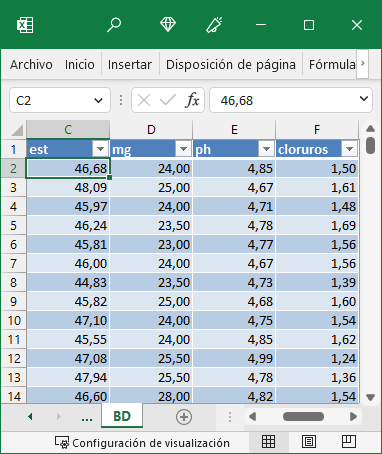
Vamos a hacer una tabla de frecuencias de los datos de \(extracto\ seco\ total\), que están guardados en la tabla en la variable(columna) \(est\).
Recordemos que la tabla de datos es intocable, no vamos a introducir ningún cálculo en esta tabla. Lo que haremos será crear una nueva hoja a continuación.
En esta hoja introduciremos las clases de frecuencia que deseamos utilizar, empezando por un valor redondeado por debajo del mínimo de los valores. Podemos introducir este valor mediante fórmula o simplemente a mano.
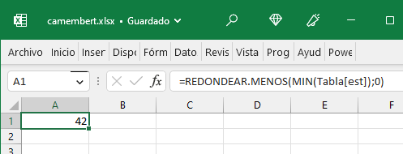
La fórmula nos asegura no equivocarnos en el valor, pero es menos complicado comprobar este valor mínimo en la flechita del filtro de la tabla
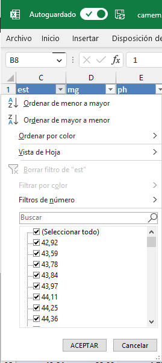
En la primera fila, celda A1, colocamos el rótulo de la serie, que en nuestro caso vamos a llamar \(est\_clases\)
Por cualquiera de los dos métodos (fórmula o directo), establecemos el valor inicial de nuestra serie de clases, en este caso, 42.
A partir de este valor, utilizando el intervalo que deseemos, rellenamos hacia abajo hasta un valor por encima del máximo.
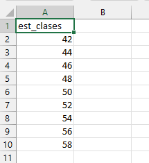
De nuevo, rotulamos la celda superior (B1en este caso) con la descripción de lo que vamos a obtener, Frecuencia
La fórmula FRECUENCIA()necesita dos rangos: el de entrada, con los valores originales, y el de las clases, que hemos creado. Los valores originales están en la columna estde nuestra tabla original, y el rango de clases, en la nueva hoja.
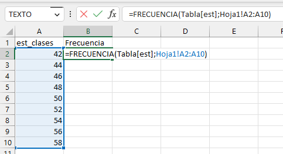
Al ejecutar la fórmula mediante <INTRO>, Excel rellena la columna a la derecha de nuestro rango de clases con la frecuencia correspondiente a cada clase.
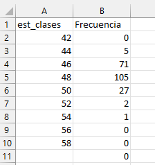
Hay que tener en cuenta que, aunque Excel no nos define en la tabla el tipo de intervalo que hemos obtenido. la fórmula de cálculo es tal que la frecuencia indicada corresponde a un <= que el valor de clase. Es decir, Excel calcula los intervalos considerando el valor que damos en la clase como el límite superior del intervalo, incluído el propio valor. Para evitar confusiones, es útil añadir una columna con los intervalos especificados de forma manual.
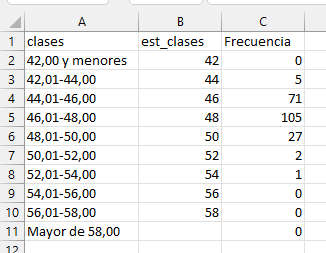
A partir de la tabla de frecuencia, puede hacerse un diagrama de barras
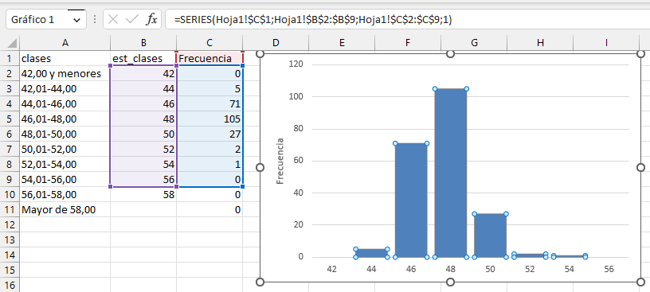
Construir una tabla de frecuencias utilizando las tablas dinámicas
Lo primero que haremos será insertar una tabla dinámica, y la crearemos en una hoja nueva.
Para ello, colocamos el cursor en una celda cualquiera dentro de la tabla de datos y buscamos la opción en el menú Insertar>Tabla dinámica. Aceptamos las opciones de Tabla o rango y de Nueva hoja de cálculo:
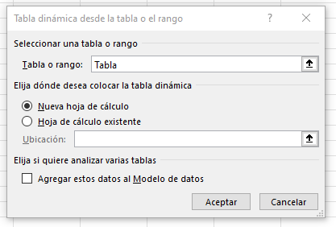
Una vez creada la nueva tabla dinámica, en la definición de campos de tabla dinámica colocamos en Filas y en Valoresla variable de la cual queremos hacer la tabla de frecuencias, en nuestro caso, \(est\).
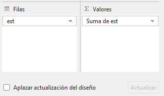
Ahora modificamos la definición de Valores, sustituyendo Suma por Recuento. Para ello, pulsamos en la flecha de opciones a la derecha y elegimos la opción Configuración de campo de valor:
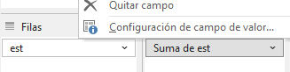
Seleccionamos Recuento y aceptamos
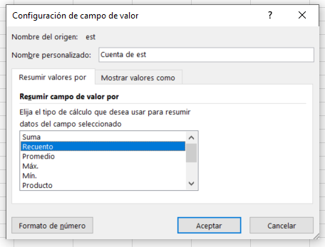
Nuestra tabla debe tener este aspecto:
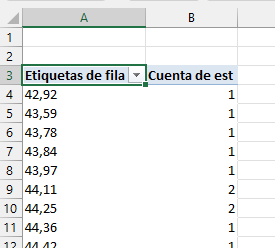
Ahora hacemos click derecho en el ratón sobre uno cualquiera de los valores de \(est\) en la columna A y elegimos Agrupar...Aquí podemos mantener la opción por defecto presentada o elegir nuestra configuración. En este caso, yo he elegido agrupar desde 42 hasta 56 de 2 en 2
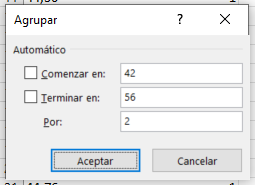
La tabla dinámica nos agrupa los resultados, presentando la tabla de frecuencia
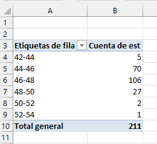
De nuevo, podemos insertar un diagrama de barras desde el menú Insertar, escogiendo el gráfico de barras. Esto inserta un gráfico dinámico que se modificará automáticamente si cambiamos el diseño de nuestra tabla.
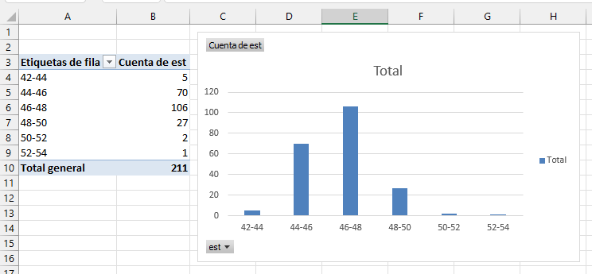
El uso de las tablas dinámicas tiene dos ventajas principales:
La rapidez con la que se puede cambiar la configuración del agrupamiento, y
la posibilidad de crear gráficos dinámicos enlazados, como hemos visto
Una cuestión muy importante a tener en cuenta es que el contenido de una tabla dinámica no se puede editar manualmente, todas las modificaciones deben hacerse manejando la interface de las tablas dinámicas.
Otra consideración es que la tabla dinámica ignorará las clases vacías (con valor de frecuencia \(cero\)). Es necesario prestar atención a que, si fuese el caso, esta característica no nos introduzca efectos no deseados en la gráfica, falseando los resultados. Por esta razón, casi siempre es más seguro hacer nuestras tablas de frecuencia utilizando el primer método, la fórmula FRECUENCIA(), y ajustando los ceros si es necesario.
A veces es posible que la agrupación de la tabla dinámica presente un mensaje de que los datos no pueden ser agrupados. Esto sucede cuando hay un error en los datos (por ejemplo, si hay datos de texto entre los valores numéricos que no hemos detectado) o si hay valores en blanco en la tabla original. El uso de los filtros sobre la tabla original permite encontrar este tipo de errores con cierta facilidad
Para probar
Intenta rehacer la tabla anterior reagrupando las clases de la tabla dinámica por intervalos de \(1\). Haz lo mismo mediante la función FRECUENCIA()